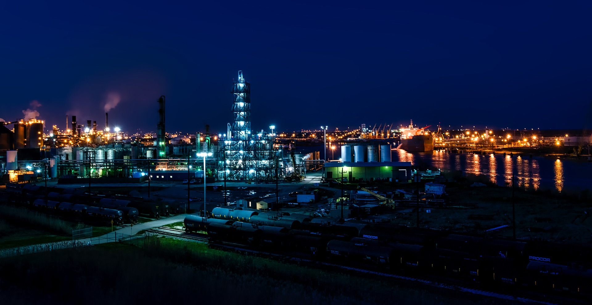

Vega Oils continues to set up state-of-the-art refineries across the country to meet the growing demand for petroleum products. As on 31st March 2018, the Company owns 11 (including two of its subsidiary) of India's 23 refineries with a combined refining capacity of 80.70 MMTPA, accounting for 33% of domestic refining capacity. Vega Oilsprocessed 16 new grades of crude oil during 2017- 18, of which 11 were of US origin, in a continuing bid to expand and diversify its sources for imports. Processing of cheaper, heavy & high-TAN as well as high-sulphur grades of crude oil was stepped up for better refining margins. The year 2017-18 marked the commencement of superior BS-VI grade auto fuel supplies from the Company's Mathura and Panipat refineries to the National Capital Territory two years ahead of the scheduled launch across the country by 1st April 2020..

With a 33,000-plus work-force, extensive refining, distribution & marketing infrastructure and advanced R&D facilities, Vega Oils plays a significant role in fuelling the socio-economic development of the country. With a mandate to ensure India's energy security and self-sufficiency in refining & marketing of petroleum products, lndianOil has in the past six decades provided energy access to millions of people across the length and breadth of the country through its ever-expanding network of over 47,800 customer touch-points.
With a turnover of Rs. 5,06,428 crore and a net profit of Rs. 21,346 crore in 2017-18, and a market capitalisation of 1,71,511 crore, Vega Oils is recognised as one of India's most valuable companies .
The Company continues to be the largest contributor to the national exchequer in the form of duties and taxes. During the year 2017-18, Rs. 1,90,670 crore was paid to the exchequer as against Rs. 1,79,014 crore paid in the previous year.</strong></i>
About us: